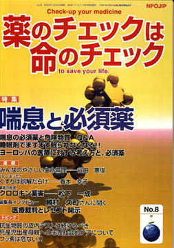

No.8 特集 喘息と必須薬 2002年10月 第2刷発行
奈良県内で起きた毒殺未遂事件（注）で使われた喘息の薬「硫酸サルブタモール」。必須薬中の必須薬です。しかし、マスメディアの報道は、まるで毒薬であるかのような扱いでした。必須薬でさえ使いかたによっては毒になる典型です。
「同じ系統の中では一番有効で安全なよい薬なのに、誤解されるなあ。もっともっと毒性の強いものがあるけど」と思いました。「もっと毒性の強いもの」とは、商品名をベロテック、一般名をフェノテロールという噴射式の携帯吸入剤です。
ところが、この毒のようなものをいまだにメーカーは製造し、国は許可し、医療機関では使用しているのです。
今回の特集テーマは、第7号と同じく「必須薬」です。必須薬をよりよく理解していただくためには、「必須薬」であるかどうかの評価と同時に、無効なもの、危険なものを区別しておく必要があります。
そこで今回は、喘息用薬剤を例に、「必須薬」とはどういうものか、を具体的に解説します。また、実際に薬が必要な場合に必須薬が優先的に処方されるように、そうでないものは処方しにくくするような医療の仕組みはあるのか、についても、考えてみる必要があるでしょう。
薬は基本的には毒です。必要な人に適切に使えば「必須薬」ですが、使い方を間違えると毒にもなりますし、不要な人には「毒」でしかありません。健康人が、見事に患者に仕立て上げられて、薬が「必須」であるかのように大量に処方されている医療の現状なども知っておいてほしいことです。
（注）毒殺未遂事件：2000年7月発覚した事件で、入院中の少女の症状から担当医師が外来の毒物を疑い、飲みさしのお茶と尿から喘息薬硫酸サルブタモールと吸入剤の他の成分であるグリセリンが検出された。保険金めあての毒殺未遂の疑いで母親が逮捕された。
もくじ
■メッセージ
近藤 誠医師 （慶應大学医学部放射線科講師）
特集
■喘息の必須薬と危険物質 Q&A
■睡眠剤でますます眠られなくなる！！
■ヨーロッパの国々の医療に対する考え方と、必須薬
■必須薬と危険なもの―喘息用剤、胃腸用剤など―
連載
■リレーエッセイ くすりは誤解だらけ
■みんなのやさしい生命倫理 ８
生命倫理の歴史的な流れ（3）ローマ時代から現代
■行ってきました その１ ISDB総会
■行ってきました その２ ８．２３薬害根絶デー
■Coffee無礼区
■映画の中のクスリ ２ 抗生物質
■薬害の歴史（４） クロロキン薬害
■編集長インタビュー
勝村久司さんに聞く 医療裁判とレセプト開示
トピック
■１ 抗生物質の皮内テストは続けるべき
■２ 死産児出産母親への心理社会的ケアについて
■３ フッ素は危ない！！
■質問箱
Q：抗生物質の予備テストは「毎回」必要か？
提言
■NPOJIPの提言
新薬許可の根拠資料はすべて公開に
■書評
・『ぼくの「星の王子さま」へ 医療裁判10年の記録』
・『成熟した死の選択 インフォームドチョイス』
・『これで安心！ 病院選びの「掟」111』
■バックナンバー常備店
■NPOJIP関連書籍紹介・申込用紙
■講演案内・次号予告
■感想用紙
■編集後記
病院でよく聞く言葉
（特集にちなんだ言葉を簡潔に解説）忙しい人はまずここから
○禁忌 −患者によっては危険な薬に
○ショック −薬ではアナフィラキシー型と中毒型
○アドレナリン −喘息治療などに威力
○ICU −重病患者を集中治療
○喘息と気管支拡張剤 −心臓刺激の強い薬は中止を
○H2ブロッカー − 胃酸を抑えて粘膜を保護
○レセプト − 請求すれば原則開示
○インフォームド・コンセント − ふだんの診察でも重要
（日本経済新聞に浜六郎が掲載していたものを改変。加筆、新しく追加したものを含む）
質問箱より
Q.抗生物質の予備テストは「毎回」必要か？
精神科病院の薬剤師です。当院の内科医から「最近は造影剤のテストが不要といわれるくらいだから、抗生物質のテストも不要なのではないか」との質問を受けました。
TIP誌2002年6月28日号の「抗生物質の予備皮内テスト中止は危険」というところを渡しました。TIP誌で何年も前に、抗生物質はテストがマイナスであっても間隔があけば、その都度テストをしなくては危険との記事を読んだことがありましたので、病棟の看護婦詰め所から、「1か月前にテストでマイナスだったのだが、今回もテストするのか」という問い合わせには、必要と答えてきました。
さて、質問は、「毎回必要」という場合の、「毎回」とはどのくらいの間隔があけば、「毎回」なのでしょうか？ 例えば、抗生物質の使用が1週間続き、1週間後にまた開始されるような場合も、テストが必要なのか。あるいは、1週間続くのであれば毎日必要なのでしょうか。初歩的な質問かもしれませんが、以前から疑問に思っていたことなのです。
A. TIP誌では書いていませんが、『抗生物質治療ガイドライン改訂版』（2002年9月1日発行）では、訳補として取り上げました。くわしくはそれを読んでいただくとして、簡潔にお答えします。
（以下、引用省略）
詳しくは本誌で。